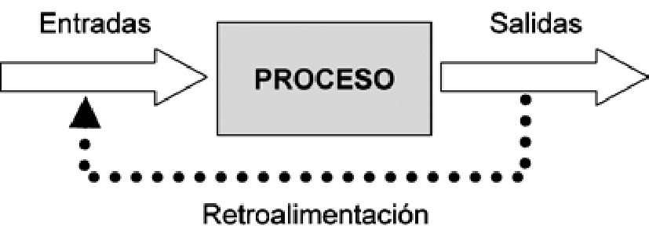
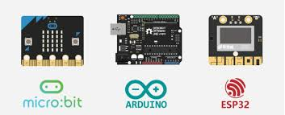
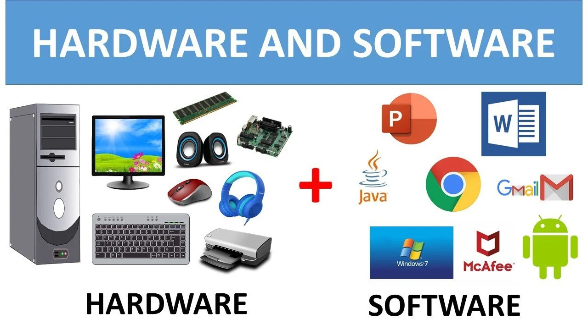
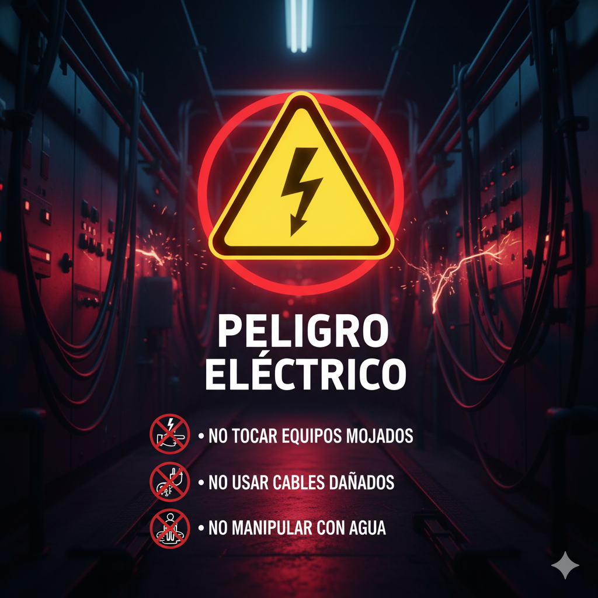

¡Descubre Cómo Funcionan las Máquinas!
Desde tu móvil hasta un semáforo, pasando por un videojuego o un robot, todos funcionan gracias a los sistemas de computación. Pero, ¿qué son exactamente y cómo están construidos?
En esta unidad, vamos a explorar las piezas fundamentales que hacen posible que la tecnología funcione, tanto por dentro como por fuera. Entenderemos cómo se comunican las máquinas, qué son los cerebros diminutos que las controlan y por qué es tan importante la seguridad cuando trabajamos con electricidad.
- - Un sistema de computación es como un cerebro electrónico.
1. Introducción a los Sistemas de Computación
Un sistema de computación es un conjunto de elementos que trabajan juntos para procesar información. Piensa en él como un equipo que recibe datos, los transforma y luego produce un resultado.
Componentes básicos de un sistema de computación:
- Entrada (Input): Es la información que el sistema recibe.
- Ejemplos: Teclado, ratón, micrófono, sensor de temperatura.
- Proceso: Es la parte donde el sistema "piensa" o realiza cálculos con la información recibida.
- Ejemplos: La CPU (cerebro del ordenador), un microcontrolador.
- Salida (Output): Es el resultado que el sistema produce.
- Ejemplos: Pantalla, altavoces, impresora, luz LED, motor de un robot.
Todos los sistemas informáticos, desde el más simple al más complejo, siguen este ciclo de entrada, proceso y salida.

- - El ciclo de un sistema de computación.
¡Actividad Práctica! Identifica los componentes de entrada, proceso y salida en tres objetos tecnológicos que uses a diario (ej. un mando de consola, una lavadora, un cajero automático).
2. Concepto de Microcontroladores: Pequeños Cerebros para Tareas Específicas
Un microcontrolador es como un ordenador muy pequeño y especializado, diseñado para controlar una tarea específica. Piensa en el "cerebro" de una lavadora, un horno microondas o un juguete electrónico.
A diferencia de un ordenador personal que puede hacer muchas cosas, un microcontrolador está programado para hacer una o pocas cosas muy bien. Son esenciales en la robótica y la electrónica porque permiten que los dispositivos interactúen con el mundo físico (a través de sensores y actuadores).
Ejemplos de microcontroladores populares:
- Arduino: Muy popular para proyectos de electrónica y robótica.
- micro:bit: Ideal para aprender programación y electrónica de forma sencilla.
- ESP32/ESP8266: Usados para proyectos con conexión a internet (IoT).

- - Una placa de microcontrolador, el cerebro de muchos dispositivos.
¡Actividad Práctica! Busca imágenes de diferentes dispositivos electrónicos en tu casa (ej. un mando a distancia, un termostato inteligente) e intenta imaginar qué tipo de microcontrolador podrían llevar dentro.
3. Hardware y Software: El Cuerpo y el Alma de la Computación
Para que un sistema de computación funcione, necesita dos cosas fundamentales que trabajan juntas:
- Hardware: Son todas las partes físicas y tangibles de un sistema de computación. Todo lo que puedes tocar.
- Ejemplos: La pantalla, el teclado, el ratón, el disco duro, la placa base, los cables, los chips.
- Software: Son los programas, instrucciones y datos que le dicen al hardware qué hacer. No se puede tocar.
- Ejemplos: El sistema operativo (Windows, macOS, Android), los videojuegos, las aplicaciones (Word, Chrome, Scratch).
El hardware sin software es como un cuerpo sin cerebro, no puede hacer nada. El software sin hardware es como una idea sin un cuerpo para ejecutarla, no existe físicamente. ¡Necesitan el uno del otro!

- - Hardware (físico) y Software (programas).
¡Actividad Práctica! Haz una lista de 5 elementos de hardware y 5 elementos de software que encuentres en tu ordenador o móvil.
4. Introducción a la Seguridad Eléctrica: ¡Cuidado con la Corriente!
Cuando trabajamos con sistemas de computación, especialmente con microcontroladores o componentes electrónicos, es fundamental conocer las normas básicas de seguridad eléctrica. La electricidad puede ser peligrosa si no se maneja correctamente.
Reglas básicas de seguridad:
- Desconecta la corriente: Siempre que vayas a manipular cables o componentes, asegúrate de que el dispositivo esté desconectado de la corriente eléctrica.
- No toques cables pelados: Los cables con el aislamiento dañado pueden provocar descargas.
- Evita el agua: El agua y la electricidad no se mezclan. Mantén tus dispositivos y manos secas.
- Usa herramientas adecuadas: Utiliza herramientas aisladas cuando sea necesario.
- Sigue las instrucciones: Siempre lee y sigue las indicaciones del profesor o los manuales.
La seguridad es lo primero para evitar accidentes y proteger tanto a las personas como a los equipos.

- - ¡La seguridad es lo más importante!
¡Actividad Práctica! Diseña un pequeño cartel con 3 reglas de seguridad eléctrica importantes para un laboratorio de robótica.
Proyecto Final de Unidad: "Mi Investigación sobre Sistemas Inteligentes"
Para este proyecto, vas a investigar un sistema de computación o robótico que te parezca interesante y que tenga un impacto en el mundo real. Tu objetivo es entender cómo funciona y cómo contribuye a resolver un problema o mejorar una situación.
Puedes elegir un tema como:
- Un robot de limpieza (ej. Roomba)
- Un sistema de riego automático inteligente
- Un semáforo inteligente
- Un dron de reparto
- Un sistema de seguridad del hogar
- Un brazo robótico industrial
Tareas a Realizar:
- 1. Investigación:
- Describe el sistema elegido y su función principal.
- Identifica sus componentes principales de Hardware y Software.
- Explica cómo interactúa con el mundo físico (qué sensores usa para la entrada y qué actuadores usa para la salida).
- ¿Qué problema del mundo real resuelve o qué mejora aporta?
- ¿Cómo contribuye a la sostenibilidad (ej. ahorro de energía, optimización de recursos, reducción de residuos)?
- 2. Formato de Presentación:
Elige uno de los siguientes formatos para presentar tu investigación:
- Una presentación digital (ej. con Canva, Genially, Google Slides).
- Un póster informativo (digital o físico).
- Un informe escrito con ilustraciones.
Criterios trabajados:
- 3.1. Ser capaz de construir un sistema de computación o robótico, promoviendo la interacción con el mundo físico en el contexto de un problema del mundo real, de forma sostenible.
Cuestionario: ¡Demuestra lo que sabes de Sistemas!
Responde a las siguientes preguntas para comprobar lo que has aprendido en esta unidad.